Jelling - Schiffssetzung - Letztes Update 08. bis 27.08.2023
In Jelling befindet sich an ein und demselben Ort eine Anlage, deren einzelne Teile sowohl den Übergang vom Heidentum zum Christentum als auch die Etablierung der dänischen Königsmacht in der Wikingerzeit markieren.
Ein Monument in Jelling stellt eine Schiffssetzung da - also eine Steinsetzung in spitzovaler Form, die ein (Toten-)Schiff nachzeichnet. Allein in Dänemark sind etliche davon bekannt - Stolbro Næs - Dyndved - Klebæk Høje - Højstrup Mark - Lindholm Høje - Vejerslev - Hjarnø - Glavendrup - Konabbe Skov - Lejre - Ferslev. Die mit Abstand größte unter den genannten ist die in der Nähe von Vejerslev - Høje Stene genannt - mit einer Länge von ca. 80 m. Das ist aber quasi nicht mal ein Viertel der Länge dieser Schiffssetzung in Jelling.

Spuren, sprich Steine der Schiffssetzung in Jelling sind über die Jahre immer wieder an verschiedenen Stellen aufgetaucht und von den verschiedenen Forschern / Beobachtern aber auch immer wieder anders gedeutet worden. Schon Søren Abildgaard (*18.02.1718 - 02.07.1791, Zeichner, Kupferstecher und Geologe) schrieb 1771 in seinem Tagebuch (S. 12 und 13 - übersetzt): "Auf der Ostseite des Königinnen Hügels (Nordhügel) in Lars Sognefogeds Toft, befinden sich einige große Felsbrocken in einer Reihe von Süden nach Norden, nahe der Ostseite dieser Steine muss der Überlieferung nach ein sehr großer flacher Felsbrocken unter der Erde liegen, auf dem etwas steht. Es könnte sich lohnen dort zu graben, um herauszufinden, ob es ein solches Runendenkmal im Boden geben sollte."
Auch bei der Ausgrabung in beiden Grabhügeln, die 1861 auf Veranlassung des dänischen Königs Frederik VII. (* 6.Oktober 1808 - 15. November 1863, von 1848 bis zu seinem Tod König von Dänemark) erfolgte, tauchten mehrere große Steine - Bautasteine - auf.
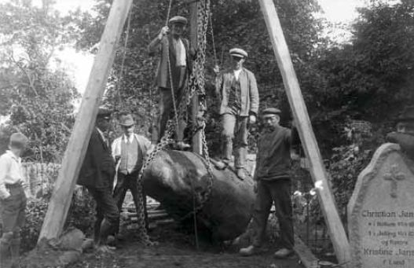
Dieses Foto aus dem Jahr 1928 zeigt auch einen Stein aus der Schiffssetzung der auf dem Friedhof von Jelling entfernt wurde. Bildquelle: Steen Hvass - Jelling Monumenterne deres historie og bevaring - 2011 - S. 34
Bereits 1861 wurde also klar, dass sich im Südhügel große Steine befanden, doch erst eine umfangreiche Ausgrabung im Jahr 1941/42 brachte zu Tage, dass die Steine in zwei Reihen standen. Im 2. Weltkrieg, als Dänemark von Deutschland traurigerweise besetzt war, wurden nämlich durch Initiative des Nationalmuseum in Kopenhagen Ausgrabungen in beiden Hügeln vorgenommen. Insbesondere der Südhügel wurde unter der Leitung von Ejnar Dyggve (*17.10.1887 - 06.08.1961, Architekt, Archäologe) nahezu komplett umgegraben.
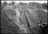

Die erhoffte Grabkammer fand sich nicht, aber eben viele Steine, die in zwei auseinanderlaufenden Reihen unter ihm verborgen waren. Der Ausgräber deutete die beiden Reihen Steine jedoch als dreieckiges "Bauta-Vi", ein heiliger heidnischer Bezirk.
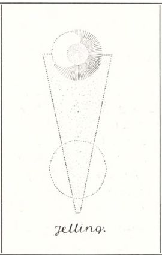
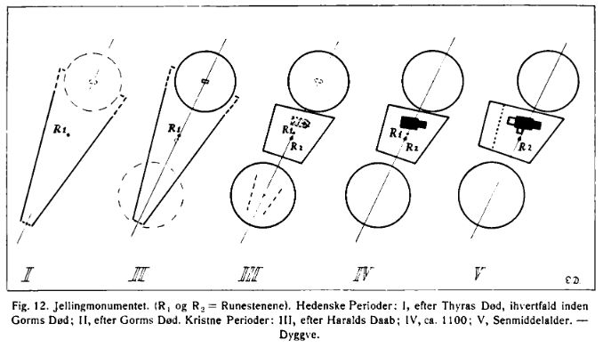
Bildquelle: Ejnar Dyggve - Jelling Kongehøje - Udgravningen 1941 - Fra Nationalmuseets Arbejdsmark - 1943 - S. 28 und 27 (I und II = heidnisch - III - V = christlich).
Diese Ausgrabungen wurden damals fotografisch festgehalten und etliche Aufnahmen sind heute in der Digitale Sammlung des Nationalmuseum in Kopenhagen abrufbar. Eine kleine Auswahl - alle frei von Urheberrechten - habe ich hier zusammengestellt:
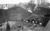 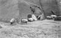 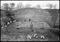 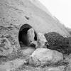 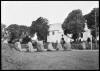 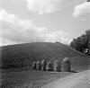 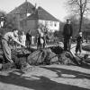 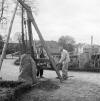


Wie man hier sieht wurden die großen Steine außerhalb des Südhügels wieder aufgerichtet - aber eben um das "Bauta-Vi" darzustellen und standen dort Jahrzehnte bis sie 2013 durch die weißen Betonplatten ersetzt wurden. Die Bautasteine unter dem Südhügel wiesen an ihrem oberen Bereich übrigens Spuren von Moos und Flechten auf, was beweist, dass sie eine gewisse Zeit im Freien standen und erst später vom Südhügel bedeckt wurden.
Diese Luftfotos - ein freies Angebot von Danmark set fra Luften / Det Kgl. Bibliotek in Kopenhagen - zeigen die Steinreihen des Bauta-Vi wie Ejnar Dyggve sich das vorgestellt hat. Das linke Foto stammt von 1953 - Urheber: Odense Luftfoto. Das Fotos rechts wurde zw. 1948 und 1952 aufgenommen - Urheber: Aalborg Luftfoto


Eine Luftaufnahme, die aus den Jahren 1932-50 stammen soll, zeigt der Kirche in Jelling und den enormen Baumbestand und die sehr dichte Bebauung in ihrem Umfeld. Quelle: Danmark set fra Luften / Det Kgl. Bibliotek - Urheber: Aero Ekspress. Man sieht aber auf der o.a. Luftaufnahme aus den Jahren 1948-52 bereits deutliche Veränderungen, worüber diese Aufnahme doch deutlich davor, also vor 1948 entstanden sein muss.

In den Jahren 1964/65 wurden durch den Archäologen Olfert Voss (*1926-2014) im Bereich des Kirchhofs von Jelling Ausgrabungen im Zusammenhang mit den großen Steinen vorgenommen. Innerhalb der Webseite des Jellingprojektet findet sich diese Unterseite "1964-65 En skibssætning eftersøges". Dort sind auch zwei Fotos eingebettet, die einen Suchschnitt mit Spuren in der Erde und auch den Fund großer Steine zeigen. Zur Deutung der Form konnten diese Untersuchungen allerdings nicht wirklich beitragen.
"
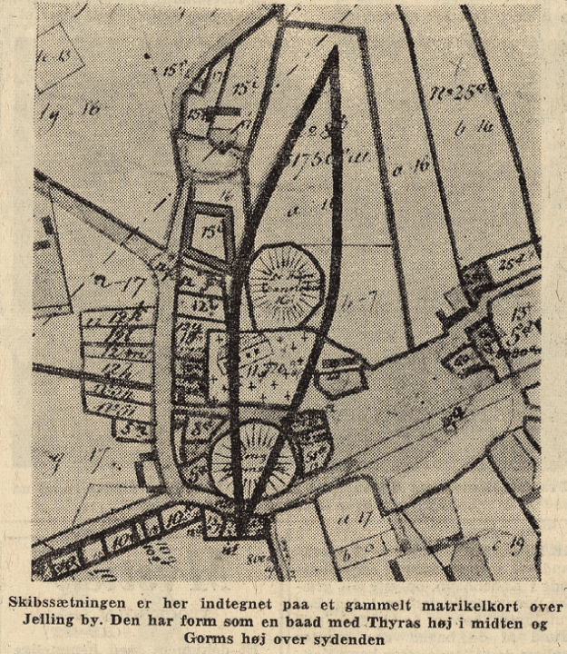
Bildquelle: Dem Artikel "Skibssætningen i Jelling, ca. 950" auf der Webseite der Aarhus Universität "danmarkshistorien.dk" entlehnt (abgerufen 09.08.2023)Dazu erschien am 17. Juni 1964 in der Zeitung "Vejle Amts Folkeblad" diese o.a. Skizze. Als ob der damalige Redakteur die tatsächlichen Ausmaße geahnt hätte!
Hier einige Fotos von mir aus dem Sommer 1990 und darunter vom Juni 2000, als die Steinreihe noch von der Ostseite des Südhügel ausgehend in Richtung Ostseite des Nordhügel verlief.
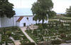 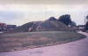 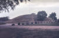


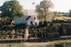 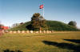 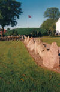 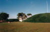


Die Interpretation von Ejnar Dyggve zur Bedeutung der Steine fand allerdings nicht überall Anklang. Eine kleinere Untersuchung an der Südseite des Südhügels im Jahr 1992 durch Knud Jepsen Krogh (*1932, Archäologe) ergab dann, dass die Reihen eher leicht gebogen waren. Die Steinfassung hatte daher sehr wahrscheinlich die Form eines mächtigen Schiffsumrisses. Die Idee wurde bereits in der Vergangenheit geäußert und ist auch nicht weit hergeholt, da an mehreren anderen Orten im nordischen Raum Steinschiffe - siehe Auflistung für Dänemark oben - gebaut wurden. Die u.a. Skizze gibt z.B. den Forschungsstand aus dem Jahr 2002 zu den Ausmaßen der Schiffssetzung wieder.
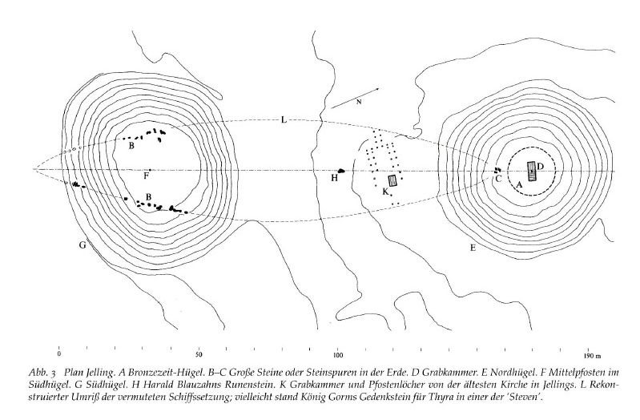
Skizze aus: Else Roesdahl - Harald Blauzahn - ein dänischer Wikingerkönig aus archäologischer Sicht, S. 98 - in: Joachim Henning (Hrsg.) Europa im 10. Jahrhundert - Archäologie einer Aufbruchszeit - 2002.
Der Archäologe Steen Wulff Andersen von den Vejle Museen, der selbst mehrere Ausgrabungen in Jelling durchgeführt hat, hat Beschreibungen der verschiedenen archäologischen Untersuchungen in Jelling studiert. Vor diesem Hintergrund hat Wulff Andersen die verschiedenen Informationen über in Jelling gefundenen große Steine gesammelt. Dadurch war es möglich, diese Karte (2009) zu erstellen, die die Lage der Steine in der südlichen Hälfte der angeblichen Schiffssetzung zeigt. Unsichere Standorte von Steinen sind durch einen Kreis gekennzeichnet, während sichere Steinfunde durch Punkte dargestellt sind.
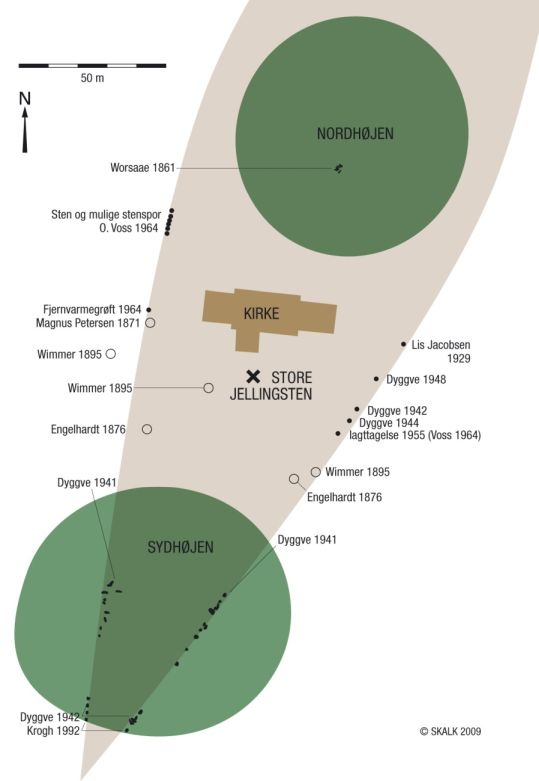
Dem Artikel "Skibssætningen i Jelling, ca. 950" auf der Webseite der Aarhus Universität "danmarkshistorien.dk" entlehnt (abgerufen 09.08.2023).
Dazu passt auch ganz gut ein Online-Artikel im "Vejle Amts Folkeblad" von Leif Baun, vom 29.12.2008, mit dem Titel "Gåde om gammel sten synes opklaret" (übersetzt: Das Rätsel um den alten Stein scheint gelöst) - abgerufen am 09.08.2023. Der Stein um den es in dem Artikel geht, ist der Stein den Lis Jacobsen (*29.01.1882 - 18.06.1961, dänische Runologin und Archäologin) im Jahr 1929 - östlich der Kirche, s.o. Skizze - gefunden hat.
Zahlreiche Publikationen haben sich diesem Thema und darüber die Autoren ihren Thesen gewidmet, aber nun sollte Schluss sein mit ungewissen Mutmaßungen.
Im September 2006 wurde nämlich ein Gebiet nördlich der Jelling Kirche mit Bodenradar von Tatiana Smekalov - in Zusammenarbeit mit dem Archäologen Olfert Voss (*1926-2014) - gescannt, worüber man Spuren dessen erkennen kann, was sich unter der Oberfläche befindet.
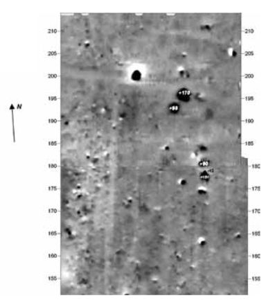
Bildquelle: Steen Hvass - Jelling Monumenterne deres historie og bevaring - 2011 - S. 23
Die Aufnahmen in dem entsprechenden Bereich zeigten Spuren einiger großer, teilweise sehr großer Steine, die in einer geschwungenen Reihe lagen. Am 24.10.2006 wurde dann dort Grabungen seitens der Vejle Museen vorgenommen und tatsächlich wurde die Nordspitze der Schiffssetzung von Jelling gefunden.
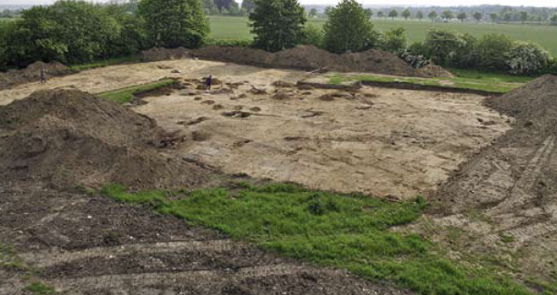
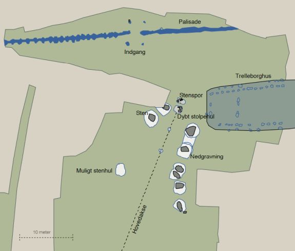
Bildquelle: Vejle Amts Årbog 2008, Peter Mohr Christensen - Nye brikker til vikinge-Jelling - S. 8 / Steen Hvass - Jelling Monumenterne deres historie og bevaring - 2011 - S. 24
Die großen Steine wurden freigelegt. Es lagen 8 große Steine, nur etwa eine Pflugfurche unter der Oberfläche. Die großen Steine standen ehemals aufrecht, wurden aber in neuerer Zeit in ein Loch gestoßen, das zuvor ausgehoben wurde, so dass das Feld vom Bauer problemlos bearbeitet werden konnte, nachdem die Steine mit Erde überdeckt wurden. Bei der Steingröße und dem Gewicht war das früher wohl die einfachste Variante um sie aus dem Weg zu räumen. Die meisten wurden wohl aber irgendwann weggeschafft und fanden z.B. als Baumaterial usw. Verwendung. Daneben fanden sich noch Spuren von 2 Löchern, in denen wohl früher ebenfalls große Steine standen.
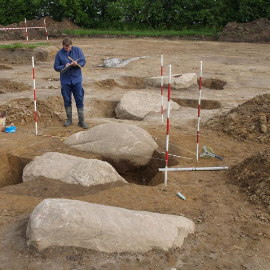
Bildquelle: Vejle Museerne - dem Artikel "Skibssætningen i Jelling, ca. 950" auf der Webseite der Aarhus Universität "danmarkshistorien.dk" entlehnt (abgerufen 09.08.2023).
Die gefundenen Steine sind 1½ bis 2 Meter hoch und ähneln den Steinen, die 1941-42 unter dem Südhügel - von Ejnar Dyggve - gefunden wurden - siehe oben.
An der Spitze der neu entdeckten Steine am nördlichen Ende befand sich ein 1,7 Meter tiefes Pfostenloch. Die Füllung im Pfostenloch zeigte die Spur eines Holzpfostens mit einem Quermaß von 50 x70 cm, der bei diesen Maßen wohl 6-8 m über der Erdoberfläche emporragte. Bemerkenswert ist, dass es genau auf der Hauptachse liegt, 177 Meter nördlich des Zentrums und der Grabkammer im Nordhügel. Exakt der gleiche Abstand vom Zentrum des Nordhügels und durch das Zentrum des Südhügel zur Südspitze der Schiffssetzung.
Bei diesen Ausgrabungen der Vejle Museerne wurden dann die wahren Ausmaße der größten Schiffssetzung (dän. skibssætning) ihrer Art in der Welt - aus ca. 390 Steinen geformt - 356 m Länge - 80 m an der breitesten Stelle - erkannt. Diese gigantische Schiffssetzung wurde im Jahr 2013 durch 4 % weiß Betonplatten, Größe je 0,1 x 1,2 m x 2,4 m - Gewicht je 700 kg, in der Landschaft veranschaulicht. Insgesamt wurden 133 Stück (4 % weiß) Betonplatten verlegt. Im Bereich der Nordspitze ragen davon genau 10 Stück schräg in einem 18 Grad Winkel aus dem Boden. Unter diesen speziellen Platten sind bei den Ausgrabungen 2006 die acht großen Steine und die beiden Löcher ehemaliger Steine gefunden worden.
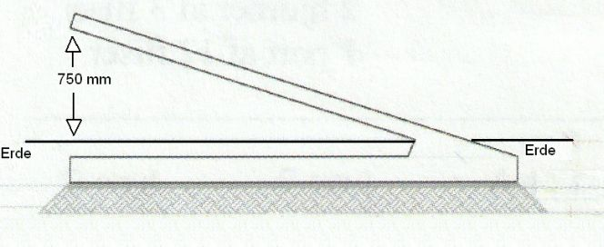
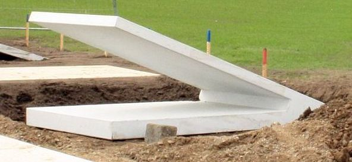
Eigenes Foto vom 21.08.2013
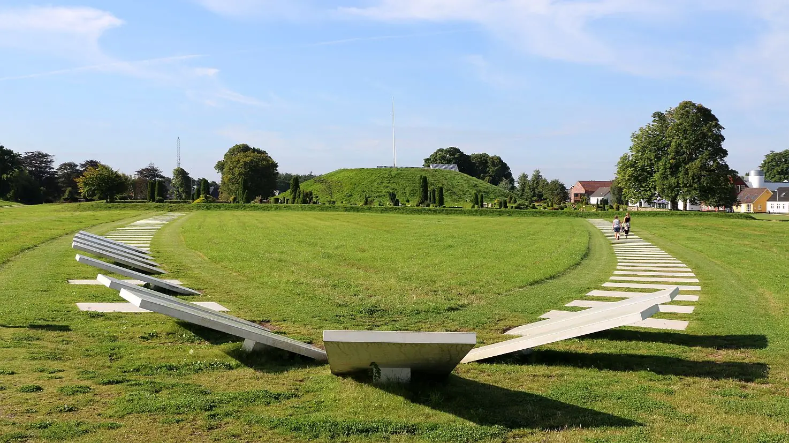
Innerhalb der nordwest Ecke der Palisade wurden vor 2015 insgesamt 12 große Bautasteine abgelegt, die sicherlich ursprünglich in der Schiffssetzung standen. Sie sind in Google Maps mit Aufnahmen von 2023 auch noch dort in Form eines "S" zu sehen.
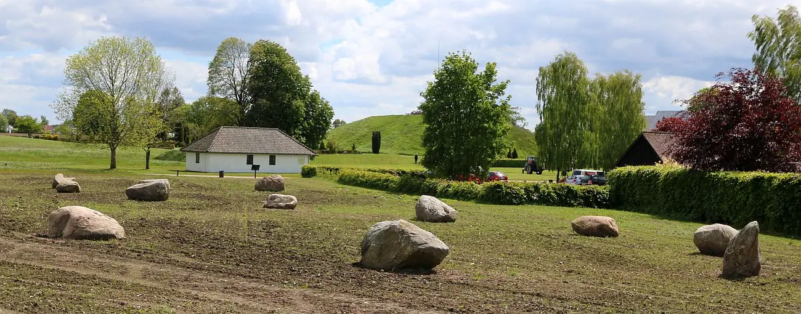
Literaturhinweise:
Broholm, H.C. - Skibssætninger i Danmark - Fra Nationalmuseets Arbejdsmark 1937 - S. 11-26
Ejnar Dyggve - Jelling Kongehøje - Udgravningen 1941 - Fra Nationalmuseets Arbejdsmark - 1943 - S. 19-31
Thorkild Ramskou - Stavgård og bautavi - KUML Nr. 7 - 1957 - S. 86-90
P. V. Glob - Jellings Bautasten - KUML Nr. 19 - 1969 - S. 97 - 110
Michael Müller-Wille - Bestattung im Boot - Studien zu einer nordeuropäischen Grabsitte - Offa - Band 25-26 - 1968-69
Torsten Capelle - Schiffsetzungen - Praehistorische Zeitschrift, Band 61, Heft 1 - 1986 - S. 1-63
Felix Vestergaard - Monumental Ship-Settings in Denmark and Scania - KUML Nr. 56 - 2007 - S. 145-190
Peter Mohr Christensen / Steen Wulff Andersen - Kongeligt? - SKALK 2/2008 - S. 3-10
Tatyana N. Smekalova, Olfert Voss, Sergey L. Smekalov - Magnetic Surveying in Archaeology - 2008 - kann komplett abgerufen / heruntergeladen werden
Steen Hvass - Jelling Monumenterne deres historie og bevaring - 2011